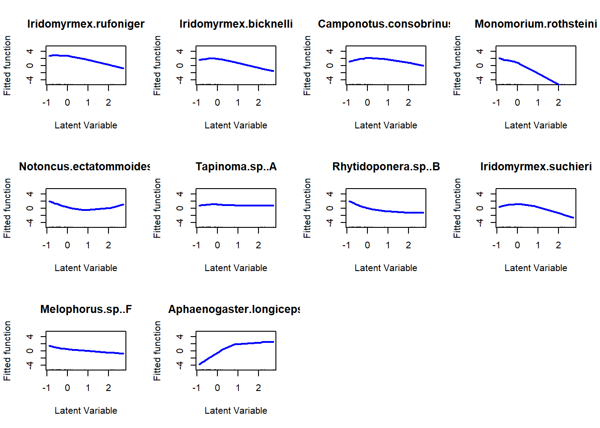

In this script we will analyze the antTraits data with CAO and CQO. Elsewhere on the blog you can find an analysis of the same data using mvabund, boral and gllvm.
First of we will setup the analysis by loading the required libraries. If you haven’t already done so, you will need to install the pacman R package before running this code. Additionally I will load my custom made residual plot function. The code for this function is currently not available online anywhere, but I can send it to you if you write me an email.
pacman::p_load(data.table, dplyr, ggplot2, purrr, VGAM, mvabund)
source(file.path(dir_script, "cqo_residual_plot.R"))The antTraits data set we will analyze today is included mvabund and gllvm so we can load it using the data() function after loading the mvabund package.
data("antTraits")
bio = antTraits$abund
env = antTraits$env
env = scale(env)Yee (2015) (p.241) suggests to keep the number of species below 10, the number of sites below 500 and the number of environmental variables below 5. The total dataset contains 41 species we have to choose a subset. Here I start out with the 10 most abundant species and evaluate the unimodality of their responses toward one latent variable with CAO. If the CAO shows responses that are strongly non-unimodal (e.g. linear, bimodal or concave) I will drop the respective species and replace it with the next most abundant one.
First find the ten most abundant species.
colSums(bio) %>%
sort(decreasing=T) %>%
names %>%
.[1:10]## [1] "Iridomyrmex.rufoniger" "Pheidole.sp..A"
## [3] "Rhytidoponera.metallica.sp..A" "Pheidole.sp..E"
## [5] "Iridomyrmex.bicknelli" "Camponotus.consobrinus"
## [7] "Monomorium.leae" "Iridomyrmex.mjobergi"
## [9] "Heteroponera.sp..A" "Nylanderia.sp..A"In CAO and CQO response variable and predictors are in the same data frame.
comb = cbind(bio,env)Below we fit the first CAO. There are tons of options that can be tuned in CAOs and even more in CQOs. Here, I will merely cover the most important and basic ones. For a more in-depth treatment I refer to Yee (2015).
We start of with the formula. Here we provide the column names of response variables, in a cbind, and separate them with a tilde from the predictors.
The family argument determines the residual distribution and mean variance relationship. In VGLM some family names end in ff for some reason. So its poissonff instead of Poisson and bionomialff instead of binomial but negative binomial models can be fitted with the negbinomial family. For a complete list of implemented families see the help page of the cqo function. The rank argument gives the number of latent variables. If you try to fit a CAO with two latent variable you will see an error saying: “havent got Rank = 2 going yet”. If you dare fitting a model with more than two latent variable R will probably crash. Or at least mine did.
The non-linear degree of freedom (df1.nl) are specific to the CAO and determine the smoothness of the function. A df1.nl of 1.5 approximates CQO (Yee 2015). By setting df1.nl to 2 we apply a liberal inclusion criterion. Bestof determines the number of models fitted, each with different randomly chosen. starting values. CAO and CQO are prone to finding local solutions to prevent this multiple models are fit and their deviances are compared. If the lowest deviance was found more than three times (just a rule of thumb) you probably found a global minimum.
cao_p = cao(
formula = cbind(
Iridomyrmex.rufoniger,
Pheidole.sp..A,
Rhytidoponera.metallica.sp..A,
Pheidole.sp..E,
Iridomyrmex.bicknelli,
Camponotus.consobrinus,
Monomorium.leae,
Iridomyrmex.mjobergi,
Heteroponera.sp..A,
Nylanderia.sp..A
) ~
Bare.ground + Canopy.cover + Shrub.cover +
Volume.lying.CWD + Feral.mammal.dung,
family = poissonff,
data = comb,
Rank = 1,
df1.nl = 2,
Bestof = 30
)With the second line below we evaluate if a global minimum was reached. If the number that is returned there is below 3 we should rerun the CAO and possibly increase the Bestof argument. Here 8 from 30 models have the same deviance which means that we are likely to have found a global minimum.
cao_p_summary = summary(cao_p)
globsol = function(x){
sum(
round(x@misc$deviance.Bestof,0)
==
round(min(x@misc$deviance.Bestof), 0)
)
}
globsol(cao_p_summary)## [1] 8par(mfrow=c(3,4))
plot(
cao_p,
lcol = "blue",
lwd = 2,
ylim = c(-5, 5)
)Most species do not respond unimodally so we replace them with new ones.
cao_p = cao(
formula = cbind(
Iridomyrmex.rufoniger,
Iridomyrmex.bicknelli,
Camponotus.consobrinus,
Monomorium.rothsteini,
Notoncus.ectatommoides,
Tapinoma.sp..A,
Rhytidoponera.sp..B,
Iridomyrmex.suchieri,
Melophorus.sp..F,
Aphaenogaster.longiceps
) ~
Bare.ground + Canopy.cover + Shrub.cover +
Volume.lying.CWD + Feral.mammal.dung,
family = poissonff,
data = comb,
Rank = 1,
df1.nl = 2,
Bestof = 30
)cao_p_summary = summary(cao_p)
globsol(cao_p_summary)## [1] 13par(mfrow=c(3,4))
plot(cao_p, lcol = "blue", lwd = 2, ylim = c(-5, 5))
Some species still look bad (e.g. Rhytidoponera sp. B). Let’s go through the motions one more time.
cao_p = cao(
formula = cbind(
Iridomyrmex.rufoniger,
Iridomyrmex.bicknelli,
Camponotus.consobrinus,
Monomorium.rothsteini,
Iridomyrmex.suchieri,
Aphaenogaster.longiceps,
Iridomyrmex.purpureus,
Camponotus.claripes,
Tetramorium.sp..A,
Meranoplus.sp..A,
Monomorium.sydneyense
) ~
Bare.ground + Canopy.cover + Shrub.cover + Volume.lying.CWD + Feral.mammal.dung,
family = poissonff,
data = comb,
Rank = 1,
df1.nl = 2,
Bestof = 30
)cao_p_summary = summary(cao_p)
globsol(cao_p_summary)## [1] 4par(mfrow=c(3,4))
plot(cao_p, lcol = "blue", lwd = 2, ylim = c(-5, 5))The result is still not perfect but it will suffice for our purposes here. For a publication I would replace Camponotus consorbinus and Monomorium sydneyense. Now we can fit a CQO with Poisson response and one latent variable. The function call is almost identical to that of the CAOs above. We remove the df1.nl argument and add a tolerance argument eq.toler. For CQOs there are three different ways to define or estimate tolerances: 1. Estimate them from the data. (eq.toler = FALSE) 2. Estimate one tolerance to use for all species. (eq.toler = TRUE) 3. Set all tolerances to 1 (I.tolerances = TRUE). Note that 3 always implies 2. For this model we will choose the first option.
cqo_p_ut = cqo(
formula = cbind(
Iridomyrmex.rufoniger,
Iridomyrmex.bicknelli,
Camponotus.consobrinus,
Monomorium.rothsteini,
Aphaenogaster.longiceps,
Iridomyrmex.purpureus,
Tetramorium.sp..A,
Meranoplus.sp..A
) ~
Bare.ground + Canopy.cover + Shrub.cover +
Volume.lying.CWD + Feral.mammal.dung,
family = poissonff,
data = comb,
Rank = 1,
Bestof = 20,
eq.toler = F
)cqo_p_summary = summary(cqo_p_ut)
globsol(cqo_p_summary)## [1] 6We can look at the tolerances and whether the shape of the response conforms to unimodality.
data.frame(tolerance = Tol(cqo_p_ut)[1, 1, ],
bell = is.bell(cqo_p_ut))## tolerance bell
## Iridomyrmex.rufoniger 1.00000000 TRUE
## Iridomyrmex.bicknelli 0.81359556 TRUE
## Camponotus.consobrinus 40.65318348 TRUE
## Monomorium.rothsteini 0.08655521 TRUE
## Aphaenogaster.longiceps 0.21666903 TRUE
## Iridomyrmex.purpureus 0.19432859 TRUE
## Tetramorium.sp..A 0.26455682 TRUE
## Meranoplus.sp..A 0.25144384 TRUEWhile the is.bell function accepts all responses the large tolerance of Camponotus consobrinus is very likely due to its response shape. We will omit it from the next model with two latent variables. We also omit Aphaenogaster longiceps and Meranoplus sp A because their models do not seem to converge (as can be seen by the model output when you fit a model with those species).
cqo2_p_ut = cqo(
formula = cbind(
Iridomyrmex.rufoniger,
Iridomyrmex.bicknelli,
Monomorium.rothsteini,
Iridomyrmex.purpureus,
Tetramorium.sp..A
) ~
Bare.ground + Canopy.cover + Shrub.cover + Volume.lying.CWD + Feral.mammal.dung,
family = poissonff,
data = comb,
Rank = 2,
Bestof = 300,
eq.toler = F
)cqo2_p_ut_summary = summary(cqo2_p_ut)
globsol(cqo2_p_ut_summary)## [1] 20data.frame(tolerance = Tol(cqo_p_ut)[1, 1, ],
bell = is.bell(cqo_p_ut))## tolerance bell
## Iridomyrmex.rufoniger 1.00000000 TRUE
## Iridomyrmex.bicknelli 0.81359556 TRUE
## Camponotus.consobrinus 40.65318348 TRUE
## Monomorium.rothsteini 0.08655521 TRUE
## Aphaenogaster.longiceps 0.21666903 TRUE
## Iridomyrmex.purpureus 0.19432859 TRUE
## Tetramorium.sp..A 0.26455682 TRUE
## Meranoplus.sp..A 0.25144384 TRUEtol_obj = Tol(cqo2_p_ut)
data.frame(tolerance1 = tol_obj[1,1,],
tolerance2 = tol_obj[2,2,],
bell = is.bell(cqo2_p_ut))## tolerance1 tolerance2 bell
## Iridomyrmex.rufoniger 4.35244183 -5.4089537 FALSE
## Iridomyrmex.bicknelli -74.16632577 2.8552200 FALSE
## Monomorium.rothsteini 0.05985752 -0.3956730 FALSE
## Iridomyrmex.purpureus 1.00000000 1.0000000 TRUE
## Tetramorium.sp..A 1.07883508 -0.4929004 FALSEFrom all of this we can see that adding a second latent variables makes a lot of things more complicated. We had to use 10 times as many iterations, drop three species and four out of five are not responding unimodaly to both gradients. Lets have a quick look at the residuals. The fact the that some tolerances are negative, which makes no ecological sense also is due to non-unimodal responses
cqo_resid_plot(list(cqo_p_ut,
cqo2_p_ut))
Maybe we can improve the methods performance by making stronger assumptions. Namely by imposing equal variance. In the first tries this also did not work. The function did not throw and error but, after 200 iterations ,the returned model did not have a positive-definite tolerance matrix, which is another way of saying that responses were not unimodal. If we go back to the unequal tolerances model Iridomyrmex bicknelli had a remarkably large tolerance. Trying to fit this model did not help as well. Finally the I.toler model was successfully fit.
cqo2_p_it = cqo(
formula = cbind(
Iridomyrmex.rufoniger,
Monomorium.rothsteini,
Iridomyrmex.purpureus,
Tetramorium.sp..A
) ~
Bare.ground + Canopy.cover + Shrub.cover +
Volume.lying.CWD + Feral.mammal.dung,
family = poissonff,
data = comb,
Rank = 2,
Bestof = 50,
I.toler = T
)cqo2_p_it_summary = summary(cqo2_p_it)
globsol(cqo2_p_it_summary)## [1] 17tol_obj = Tol(cqo2_p_it)
data.frame(tolerance1 = tol_obj[1,1,],
tolerance2 = tol_obj[2,2,],
bell = is.bell(cqo2_p_it))## tolerance1 tolerance2 bell
## Iridomyrmex.rufoniger 1 1 TRUE
## Monomorium.rothsteini 1 1 TRUE
## Iridomyrmex.purpureus 1 1 TRUE
## Tetramorium.sp..A 1 1 TRUElvplot(cqo2_p_it, label = T, xlim = c(-3,6), ylim = c(-11,2))The latent variable plot seems little informative. But we see that many species are close to the edges of the latent space. This might cause the problems with estimation.
persp(cqo2_p_it, label = T, xlim = c(-3,6), ylim = c(-11,2))In the perspective plot we can see another common issue of CQO. The expected abundance of species with optima close to the edge of or outside of the latent variable space is strongly exaggerated. The maximal recorded abundance for Idridiomyrmex purpureus is 18. A far cry from 3e+22!
bio$Iridomyrmex.purpureus %>% summary## Min. 1st Qu. Median Mean 3rd Qu. Max.
## 0.000 0.000 0.000 2.033 1.000 18.000Below you see the coefficients i) of the covariables and latent variables and ii) of species and latent variables.
concoef(cqo2_p_it)## latvar1 latvar2
## Bare.ground 0.2971104 0.041912854
## Canopy.cover 0.8933406 0.145103077
## Shrub.cover -0.4298057 0.215742858
## Volume.lying.CWD 0.2045494 -0.029880288
## Feral.mammal.dung -0.1608657 -0.004964507t(coef(cqo2_p_it)@Optimum)## latvar1 latvar2
## Iridomyrmex.rufoniger -0.3726536 1.049112
## Monomorium.rothsteini -1.8700284 -1.914690
## Iridomyrmex.purpureus 2.9054607 -9.889431
## Tetramorium.sp..A -1.4622119 -1.993687Yee, Thomas W. 2015. Vector Generalized Linear and Additive Models: With an Implementation in R. Springer.